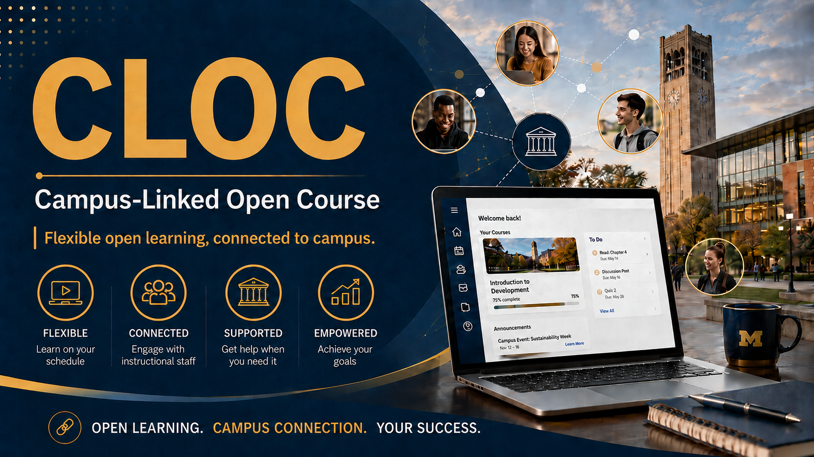

Learn Python with a little more structure and support
Hi, I’m Dr. Chuck. I built this non-credit, online section of my course for people who like the flexibility of online learning but do not want to feel completely on their own. You can work from anywhere, follow the course calendar, and get help from the instructional team while the University of Michigan campus course is running.
- Register for the course
- Read the LinkedIn article on the CLOC
- Watch the YouTube video about the CLOC
- Watch the first week welcome video
- Enrolled Students: Course Dashboard
- About this Course
This is a practical Python course with readings, videos, exercises, assignments, weekly communication, and live help. There are no university grades or credit, and you can keep working after the campus semester ends. The idea is simple: give online learners more rhythm, more connection, and a better chance to keep moving.
Click the image to view it at a larger size.